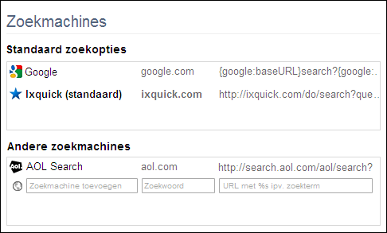
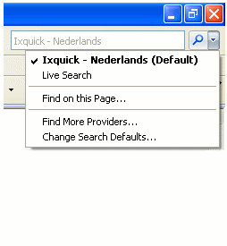
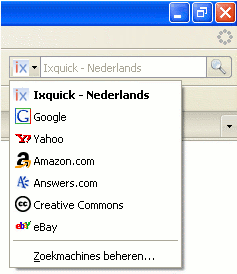
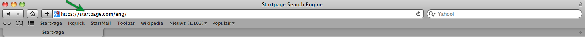
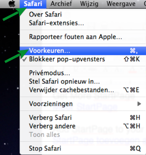
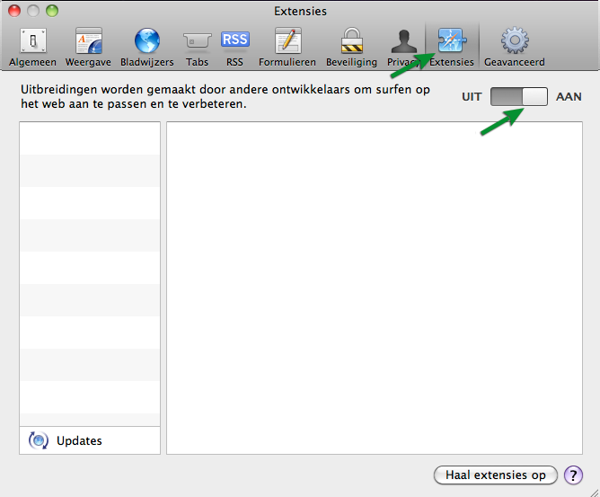
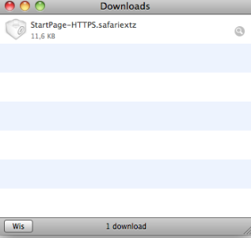
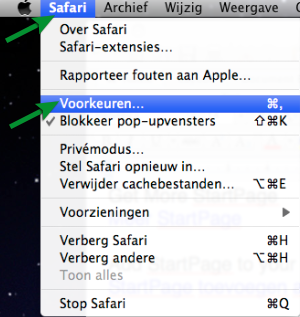
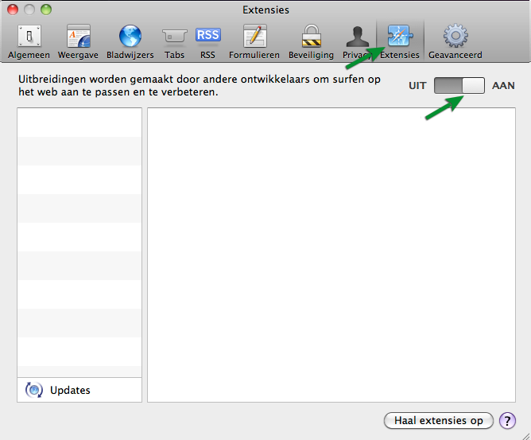
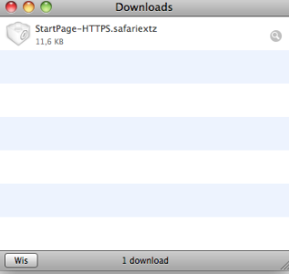

Aan uw browser toevoegen
Voeg nu eenvoudig Ixquick toe aan uw Firefox zoekmachines. Zoekmachines zijn in Firefox te vinden onder het pijltje in de zoekbalk. De instellingen die u heeft opgeslagen in "Instellingen" blijven gehandhaafd.
Voeg nu eenvoudig Ixquick toe aan uw Iceweasel zoekmachines. Zoekmachines zijn in Iceweasel te vinden onder het pijltje in de zoekbalk. De instellingen die u heeft opgeslagen in "Instellingen" blijven gehandhaafd.
Voeg nu eenvoudig Ixquick toe aan uw Icecat zoekmachines. Zoekmachines zijn in Icecat te vinden onder het pijltje in de zoekbalk. De instellingen die u heeft opgeslagen in "Instellingen" blijven gehandhaafd.
Helaas ondersteunt uw huidige Browser geen gebruik van zoek-plugins. De Ixquick zoek-plugin werkt op Internet Explorer 7.0+ en op Firefox.
Voeg nu eenvoudig Ixquick toe aan uw Internet Explorer 7+ (IE7+) zoekmachines.Zoekmachines zijn in de IE7+ Browser te vinden naast de zoekbalk.De instellingen die u heeft opgeslagen in "Instellingen" blijven gehandhaafd.
Voeg nu eenvoudig Ixquick toe aan uw Internet Explorer 7+ (IE7+) zoekmachines. Gebruik de volgende url's van de officiële Internet Explorer Add-on Galerie, om de plugin voor IE9+ te downloaden en te installeren.
http://www.iegallery.com/nl-nl/Addons/Details/11818 — Ixquick HTTPS - Nederlands
Kies, na de installatie, Ixquick in het pull down menu van de adresbalk.
Nu bent u klaar om te zoeken: type een zoekterm, en druk op enter!
Voeg nu eenvoudig Ixquick toe aan uw SeaMonkey zoekmachines. Zoekmachines zijn dan te vinden in het menu van de "side-bar" als op de "Search" knop naast de adresbalk wordt geklikt.
Klik op "Install" en vervolgens op "OK" in de Chrome-popup om Ixquick toe te voegen aan uw lijst met Google Chrome-zoekmachines.
Na de installatie kunt u Ixquick op de volgende manier als standaard zoekmachine instellen:
| 1. | Ga naar de Chrome Voorkeuren (onder Chrome => Voorkeuren). |
| 1. | Klik op het "steeksleutel" menu icon, in de rechter-bovenhoek van de browser. |
| 2. | Selecteer "Voorkeuren". |
| 2. | Selecteer "Preferences" (voorkeuren). |
| 3. | Selecteer in de linker kolom "Basisinstellingen". |
| 4. | Klik bij "Zoeken" op "Zoekmachines beheren". |
| 5. | Klik op het toegevoegde Ixquick en kies "Instellen als standaard". |
| 6. | Klik op de 'X' rechtsboven om te sluiten. |
Volg deze instructies om Ixquick als standaard zoekmachine in te stellen:
| 1.Ga naar de Chrome Voorkeuren (onder Chrome => Voorkeuren). | ||||||||||||||||||||||||||||||||||||||||||||||||||||||||||||||||||||||||||||||||||||||||||||||||||||||||||||
| 2. | Klik op de tab "Basisinstellingen". | |||||||||||||||||||||||||||||||||||||||||||||||||||||||||||||||||||||||||||||||||||||||||||||||||||||||||||
| 3. | Klik op de knop "Beheren" in de sectie "Standaardzoekmachine". | |||||||||||||||||||||||||||||||||||||||||||||||||||||||||||||||||||||||||||||||||||||||||||||||||||||||||||
| 4. | Klik op + om een nieuwe zoekmachine toe te voegen. | |||||||||||||||||||||||||||||||||||||||||||||||||||||||||||||||||||||||||||||||||||||||||||||||||||||||||||
| 5. | Vul in: | |||||||||||||||||||||||||||||||||||||||||||||||||||||||||||||||||||||||||||||||||||||||||||||||||||||||||||
| 5. | Naam: Ixquick |
| 5. | Zoekwoord: ixquick.com |
| 5. | URL: https://ixquick.com/do/metasearch.pl?query=%s&cat=web&pl=chrome&language=nederlands |
| 5. | en klik op "OK" |
| 6. | Als u Ixquick de standaard zoekmachine wilt maken, klik dan op "Instellen als standaard" onderaan in het Voorkeuren window. |
| 7. | Sluit het window. |
Om Ixquick als standaard zoekmachine in Edge toe te voegen, volgt u a.u.b. deze stappen:
1. Klik op de drie puntjes  rechtsboven: rechtsboven: 
|
| 2. Vanuit het keuzemenu dat verschijnt selecteert u Instellingen. |
| 3. Scrol naar beneden. Onder Geavanceerde instellingen, selecteert u Geavanceerde instellingen weergeven. |
| 4. Scrol naar beneden en vanuit het keuzemenu onder Zoeken in de adresbalk met, selecteert u <Nieuwe toevoegen>. |
| 5. Er zal een lijst van zoekmachines te voorschijn komen. Selecteer Ixquick. |
| 6. Selecteer Als standaard toevoegen. |
| Als u Ixquick als een van de zoekmachines wilt toevoegen, maar nog steeds uw huidige zoekmachine wilt blijven gebruiken, selecteert u Toevoegen. Ixquick zal nu verschijnen als een van de optionele zoekmachines onder Instellingen. |
Kies na de installatie Ixquick uit het rijtje zoekmachines.
Nu bent u klaar om te zoeken: type een zoekterm, en druk op enter!
Als de automatische installatie bij u niet werkt, gebruik dan onderstaande url van de officiële Internet Explorer Add-on Galerie om de plugin te downloaden en te installeren.
http://www.iegallery.com/nl-nl/Addons/Details/11818 — Ixquick HTTPS - Nederlands
Na de installatie kunt u Ixquick op de volgende manier als standaard zoekmachine instellen:
 | Ga naar de Chrome Voorkeuren (onder Chrome => Voorkeuren). |
|
| Klik op het "steeksleutel" menu icon, in de rechter-bovenhoek van de browser. |
| Selecteer "Voorkeuren". | |
| Selecteer "Preferences" (voorkeuren). | |
 | Selecteer in de linker kolom "Basisinstellingen". |
 | Klik bij "Zoeken" op "Zoekmachines beheren". |
| Klik op het toegevoegde Ixquick en kies "Instellen als standaard". | |
| Klik op de 'X' rechtsboven om te sluiten. |
Volg deze instructies om Ixquick als standaard zoekmachine in te stellen:
| Ga naar de Chrome Voorkeuren (onder Chrome => Voorkeuren). | ||||||||||||||||||||||||||||||||||||||||||||||||||||||||||||||||
| Klik op de tab "Basisinstellingen". | ||||||||||||||||||||||||||||||||||||||||||||||||||||||||||||||||
| Klik op de knop "Beheren" in de sectie "Standaardzoekmachine". | |||||||||||||||||||||||||||||||||||||||||||||||||||||||||||||||
| Klik op + om een nieuwe zoekmachine toe te voegen. | |||||||||||||||||||||||||||||||||||||||||||||||||||||||||||||||
| Vul in: | ||||||||||||||||||||||||||||||||||||||||||||||||||||||||||||||||
| Naam: Ixquick | |
| Zoekwoord: ixquick.com | |
| URL: https://ixquick.com/do/metasearch.pl?query=%s&cat=web&pl=chrome&language=nederlands | |
| en klik op "OK" | |
| Als u Ixquick de standaard zoekmachine wilt maken, klik dan op "Instellen als standaard" onderaan in het Voorkeuren window. | |
| Sluit het window. |




Nu bent u klaar om te zoeken: type een zoekterm in de adres regel, en druk op enter!
Als u Ixquick niet als standaard zoekmachine wilt gebruiken dan kunt u nog steeds zoeken met Ixquick vanuit de lokatiebalk (het URL-adresveld) door in te typen: 'ixquick.com', gevolgd door een spatie, gevolgd door uw zoekterm.
Of ga naar de SeaMonkey Preferences => Category "Navigator" => Internet Search => Verander de "default search engine" in het drop down menu naar "Ixquick".
PAS OP: U gebruikt Firefox 1.5 of ouder en deze versie ondersteunt het privacy vriendelijkere zoekmogelijkheid "POST" voor deze plugin. Als dit van belang acht dan raden wij aan om een nieuwere versie van Firefox te installeren.
Helaas ondersteunt uw huidige Browser geen gebruik van zoek-plugins.
Op dit ogenblik is er geen mogelijkheid om Ixquick als plugin aan de Camino Browser toe te voegen.
U kunt Ixquick nu als zoekmachine instellen voor de adres-balk van Safari door het installeren van onze extension. Volg daarvoor de hieronder beschreven stappen. Verder wijzigt er niets aan uw browser instellingen.

- Zet de extensies van uw Safari browser aan. Dit doet u door op het woord ‘Safari’ te klikken, linksboven in de MAC OS menu balk. (rechts van het apple icoontje) In het menu dat dan verschijnt kiest u ‘Voorkeuren’, dan ‘Extensies’ rechts boven in. Het UIT/AAN knopje daar rechtsonder moet op AAN staan. Dan kunt u het schermpje sluiten.


- Klik op de link hieronder om de extensie te laden.
Ixquick Safari Extensie
- Dubbel-klik op het bestandje ‘Ixquick- HTTPS.safariextz’ in de Safari ‘Downloads’ en klik ‘Open’ als daar om gevraagd wordt.
- Klik op ‘Installeer’ als daar om gevraagd wordt om de extensie te installeren.

Nu bent u klaar om te zoeken met Ixquick vanuit de Safari adres-balk. Veel zoek-plezier!
U kunt Ixquick nu als zoekmachine instellen voor de adres-balk van Safari door het installeren van onze extension. Volg daarvoor de hieronder beschreven stappen. Verder wijzigt er niets aan uw browser instellingen.


Ixquick Safari Extensie

Nu bent u klaar om te zoeken met Ixquick vanuit de Safari adres-balk. Veel zoek-plezier!
Systeem Vereisten:- Microsoft Edge (Windows 10)
- Internet Explorer 7.0+ (Windows XP, Vista, Windows 7+)
- Firefox 2.0+ (Windows, Macintosh, Linux)
- SeaMonkey 1.1.16+ (Windows, Macintosh, Linux)
- Icecat/Iceweasel 2.0+ (Windows, Linux)
- Google Chrome (Windows XP, Vista, Windows 7+, OS X, Linux)
ALLEEN VOOR EXPERTS:
De instructies om in Firefox/Seamonkey de URL lokatie balk te gebruiken om met Ixquick te zoeken kunt U hier vinden.
| Voeg nu eenvoudig Ixquick toe aan uw Opera browser. De Ixquick zoekmachine verschijnt dan in het drop down menu naast de zoekbalk in uw browser. De instellingen die u heeft opgeslagen in "Instellingen" blijven gehandhaafd. |
|||
| Instructies
|
|
||
| 1. Ga naar: https://www.ixquick.com. |
|||
| 2. Rechts-klik op de Ixquick zoekbox (de witte ruimte links van het groene vergrootglas). |
|||
| . 2 .Ctrl-klik op de Ixquick zoekbox (de witte ruimte links van het groene vergrootglas). |
|||
| 3. Selecteer "Zoekmachine aanmaken" in het pull down menu. |
|||
| 4. Zet in het veld "sleutel": "ix" |
|||
| 5. Klik op "Details >>", en vink "Gebruik als standaard zoekmachine" aan. |
|||
| 6. Klik op "OK", en u kunt Ixquick als voorkeurs-zoekmachine gebruiken. |
|||
| 7. |
|||
| Kies na de installatie Ixquick uit het rijtje zoekmachines. Nu bent U klaar om te zoeken: type een zoekterm en druk op Enter! |
|||
| Ixquick op uw Opera browser | |||

| Safari for Windows has been discontinued by Apple, and so a Ixquick browser extension is not available at this time. However, we have a toolbar which offers the same secure, private search features. Please click here to learn more about the Ixquick toolbar. |
| Op dit ogenblik is er geen mogelijkheid om Ixquick als plugin aan de Camino Browser toe te voegen. |
| Safari 3.2+ is gerapporteerd vast te lopen tijdens het installeren van "plugins" van derden, zoals Acid Search. Naar verluidt werkt Apple aan een oplossing. Totdat deze beschikbaar is raden we u echter aan geen "plugins" te downloaden in combinatie met Safari 3.2+. |
| U kunt Ixquick toevoegen aan de zoekbox rechts-bovenin Safari met behulp van de third party Add-on "Glims". De instellingen die u heeft opgeslagen in "Instellingen" blijven gehandhaafd. |
| Instructies: |
| 1. Download en installeer de "Glims" Add-on van http://www.machangout.com en herstart Safari |
| 2. Ga naar Safari -> Voorkeuren en klik op het "Glims" icon |
| 3. Klik op "Search Engines" links in het window |
| 4. Klik op de "Add" knop onderin |
| 5. Er verschijnt een pop-up: a) type in het "Name" veld: Ixquick b) vervang in het "Query URL" veld https://www.google.com/q=#query# voor https://ixquick.com/do/metasearch.pl?language=nederlands&query=#query# (zorg ervoor dat de URL '&query=#query#' bevat) |
| 6. Klik op de "Add" knop en scroll naar beneden totdat u de Ixquick regel aantreft en sleep deze met uw muis helemaal naar boven (u kunt er ook voor kiezen om alle andere zoekmachines 'uit' te zetten door het vinkje ervoor te verwijderen) |
| 7. Sluit de Safari Voorkeuren en herstart Safari. Nu moet Ixquick in de zoek box zichtbaar zijn; type een zoekterm en druk op [enter] |
| Voeg nu eenvoudig Ixquick toe aan uw Safari browser. De Ixquick zoekmachine verschijnt dan in het drop down menu naast de zoekbalk in uw browser. |
| Instructies: |
| 1. Klik op het pijltje naast het zoekvenster in uw browser. |
| 2. Selecteer "AcidSerarch Voorkeuren..of Wijzig Zoek kanalen.." van het menu. |
| 3. Als het niet aanwezig is, download en installeer dan AcidSearch Plugin van http://www.macupdate.com/info.php/id/15495. |
| 4. Installeer eerst de AcidSearch plugin en herstart Safari, herhaal dan stap 1 en 2 en ga vervolgens naar step 5. |
| 5. Klik op een van de Zoek kanalen om de opties actief te maken en klik op "Nieuw Kanaal" (rechtsonder). |
| 6. Vul bij de Titel '"Ixquick'"in. |
| 7. Vul bij "Prefix URL" in: https://startpage.com/do/metasearch.pl?query=$0 als AcidSearch 0.7b3 of een nieuwere versie wordt gebruikt, of gebruik anders: https://startpage.com/do/metasearch.pl?query= |
| 8. Sluit het venster en selecteer Ixquick in de zoekbox. |
| Kies na de installatie Ixquick uit het rijtje zoekmachines. Nu bent U klaar om te zoeken: type een zoekterm en druk op Enter! |
| Ixquick op uw Safari browser |
| Ixquick op uw Camino browser |
| Voeg nu eenvoudig Ixquick toe aan uw Konqueror browser. De Ixquick zoekmachine verschijnt dan in het drop down menu naast de zoekbalk in uw browser. |
| Instructies: |
| 1. Goto "Settings" in the Konqueror menu of your Browser. |
| 2. Then Select "configure konqueror..". |
| 3. Then choose "Enhanced Browsing or Web Shortcuts" from the sidebar on the left, and you will get a nice long list of shortcut. |
| 4. Click "New" button. |
| 5. Enter 'Ixquick' in Search Provider "Name:" |
| 6. Enter 'https://ixquick.com/do/metasearch.pl?query=\{@}' in "Search URI:". |
| 7. Enter your own shortcuts e.g: 'ix,ixq,ixquick' in "URI Shortcuts:". |
| 8. Click OK. |
| Kies na de installatie Ixquick uit het rijtje zoekmachines. Nu bent U klaar om te zoeken: type een zoekterm en druk op Enter! |
| Ixquick op uw Konqueror browser |
Jwplayer Loading